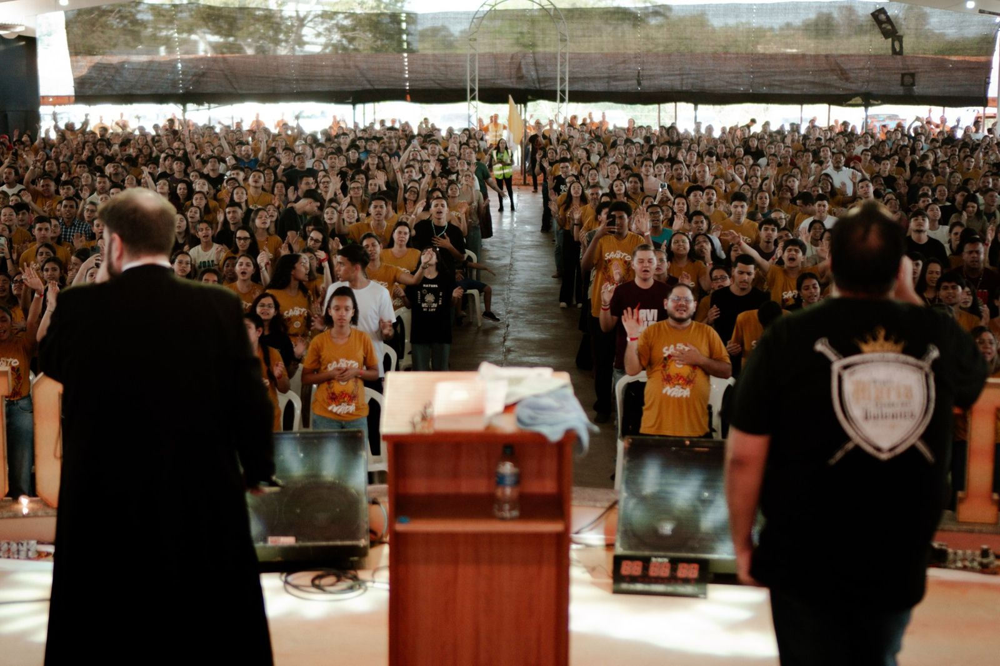
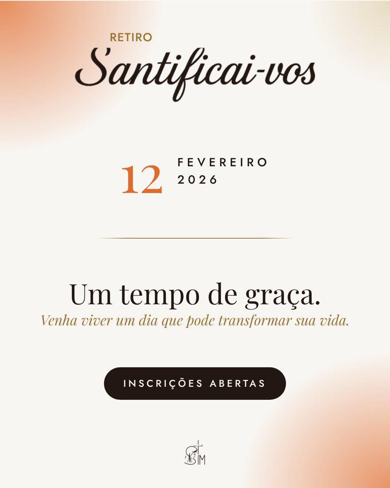
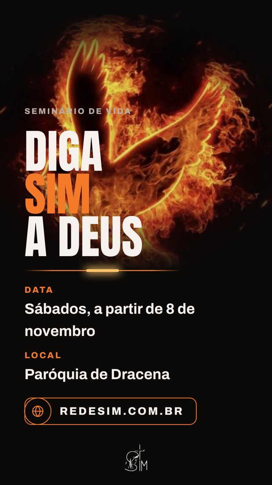

Todo ano
Festa da Misericórdia
O evento que tem o nosso carisma.
Nos reunimos todo ano para implorar a Jesus Misericordioso as graças necessárias.
Saiba mais
Retiros, encontros e celebrações para você viver um encontro pessoal com Jesus Misericordioso.


O maior evento da nossa comunidade. O OSON é um retiro para mais de 2 mil pessoas, que acontece todo ano em setembro.
O evento que tem o nosso carisma.
Nos reunimos todo ano para implorar a Jesus Misericordioso as graças necessárias.
Saiba mais
Um encontro com gosto do céu.
O retiro do curso Santificai-vos, aberto para todos.
Saiba mais
Você entra de um jeito e sai de outro.
Um retiro de encontro pessoal com Jesus Cristo.
Saiba maisMais que um grupo, uma família que reza junto.
Toda quarta-feira, no nosso centro de formação.